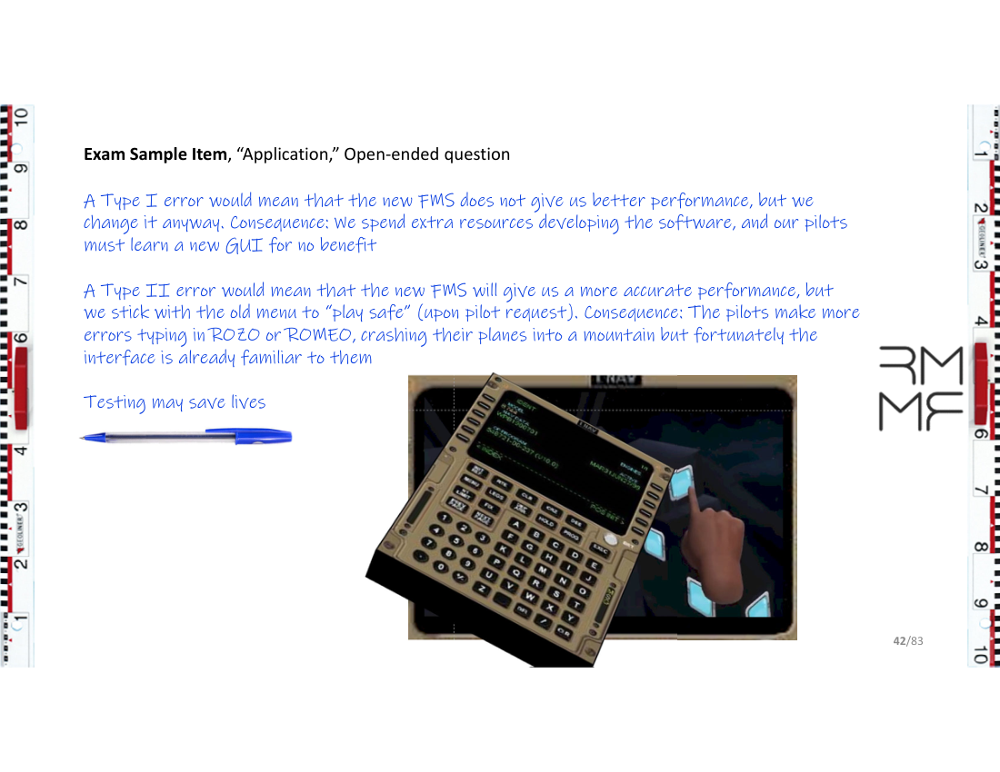
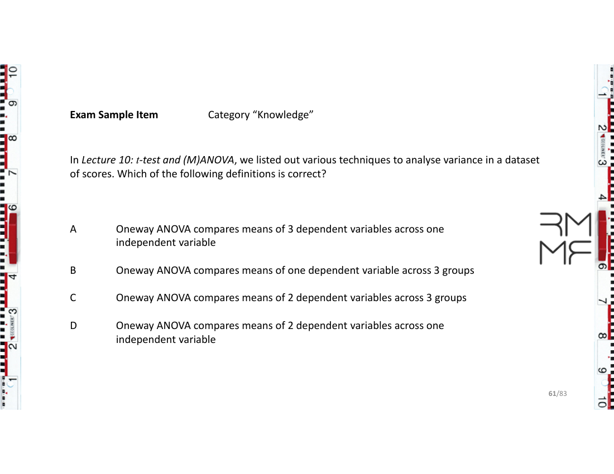

L10-E01 / Application / 开放题
FMS：两类错误的实际后果
 10 Σ SD5979 t-test (M)ANOVA 2025 11 06.pdf · PDF 第 41 页 · 点击放大
10 Σ SD5979 t-test (M)ANOVA 2025 11 06.pdf · PDF 第 41 页 · 点击放大题干中文辅助（原译文）
关于误报（第一类错误）与漏报（第二类错误）（第 10 讲：t 检验与 (M)ANOVA），假设我们正在使用 Sparse Haptic Proxy 重新设计 AA965 的飞行管理系统（FMS）
如果我们从准确性的角度考虑用户绩效，犯第一类错误或第二类错误的后果是什么？
H0：使用新的触摸面板不会带来更多正确的用户反应
H1：新的触摸面板带来更多正确的反应
考试样题，“应用”，开放式问题
Fitts´ Law!!
41/83
我的作答
查看老师答案与逐项解释 / 来源
Type I · 错误报警
新 FMS 并未提高表现，却仍然更换；花资源，还让飞行员重学界面，得不到收益。
Type II · 漏掉信号
新 FMS 本来能提高准确率，却继续旧界面；原本可减少的操作错误仍可能发生。
以上短答是课件内容的中文整理；每一小问分别对应上面的证据页。原答案 / 延续页见下方。
老师原答案与题目延续

10 Σ SD5979 t-test (M)ANOVA 2025 11 06.pdf · PDF 第 42 页 · 点击放大L10-E02 / Knowledge / 选择题
One-way ANOVA 到底比较什么？

10 Σ SD5979 t-test (M)ANOVA 2025 11 06.pdf · PDF 第 61 页 · 点击放大题干中文辅助（原译文）
A
单因素方差分析比较 3 个因变量在一个自变量上的均值
B
单因素方差分析比较一个因变量在 3 个组上的均值
C
单因素方差分析比较 2 个因变量在 3 个组上的均值
D
单因素方差分析比较 2 个因变量在一个自变量上的均值
考试样题
类别“知识”
在第 10 讲：t 检验与 (M)ANOVA 中，我们列出了用于分析分数数据集中方差的各种技术。以下哪个定义是正确的？
61/83
我的作答
查看老师答案与逐项解释 / 来源
老师答案 B以原页勾选为准
以下为依据课件整理的逐项解释。未被选中不等于概念从未讲过；“无题设依据”也不等于全课未出现。
这些选项的概念，课件正文是否出现过？
检索全部 903 页，排除已收录题目、答案页和可识别的样题 / 参考文献页。下列为按原词检索的出现记录，可能包含变体遗漏；出现不代表定义正确，也不代表考试重点。错项判定仍以逐项解释和老师答案为准。
老师原答案与题目延续
 10 Σ SD5979 t-test (M)ANOVA 2025 11 06.pdf · PDF 第 62 页 · 点击放大
10 Σ SD5979 t-test (M)ANOVA 2025 11 06.pdf · PDF 第 62 页 · 点击放大L10-E03 / Insight / 选择题
临界 t 为什么可能很大？
 10 Σ SD5979 t-test (M)ANOVA 2025 11 06.pdf · PDF 第 74 页 · 点击放大
10 Σ SD5979 t-test (M)ANOVA 2025 11 06.pdf · PDF 第 74 页 · 点击放大题干中文辅助（原译文）
考试样题
类别“洞察”
如果确立一个显著效应最低需要 t = 63.657，这意味着：
A
自由度必定很少
B
拒绝域必定很小
C
α 很大
D
A 和 B 都可能起作用
74/83
我的作答
查看老师答案与逐项解释 / 来源
老师答案 D以原页勾选为准
以下为依据课件整理的逐项解释。未被选中不等于概念从未讲过；“无题设依据”也不等于全课未出现。
这些选项的概念，课件正文是否出现过？
检索全部 903 页，排除已收录题目、答案页和可识别的样题 / 参考文献页。下列为按原词检索的出现记录，可能包含变体遗漏；出现不代表定义正确，也不代表考试重点。错项判定仍以逐项解释和老师答案为准。
degrees of freedom
正文原词命中 8 页
rejection area
正文原词命中 13 页
老师原答案与题目延续
 10 Σ SD5979 t-test (M)ANOVA 2025 11 06.pdf · PDF 第 75 页 · 点击放大
10 Σ SD5979 t-test (M)ANOVA 2025 11 06.pdf · PDF 第 75 页 · 点击放大L10-E04 / Application / 开放题
VR 头盔：体温计的黑箱
 10 Σ SD5979 t-test (M)ANOVA 2025 11 06.pdf · PDF 第 77 页 · 点击放大
10 Σ SD5979 t-test (M)ANOVA 2025 11 06.pdf · PDF 第 77 页 · 点击放大题干中文辅助（原译文）
考试样题
类别“应用”
在疫情期间，一名媒体娱乐专业的学生研究了两种 VR 头盔对体温的影响。VR 本应缓解无聊，但佩戴它不应以增加使用者的面部温度为代价
为进行测量，该学生使用了若干台 Heaco MDI908 医用非接触式红外测温仪，她将它们相互校准，发现所有设备系统性地测得 37.0 C° 的温度，标准差约为 0.5 C°
该学生抽取了 220 名参与者，每种 VR 头盔 110 名，功效分析约为 80% 至 90%，即正确拒绝零假设
幸运的是，也如预期那样，使用不同的红外测温仪并未产生显著效应。此外，两组独立样本 t 检验也显示 VR 头戴设备没有显著效应：t(219) = -.05, p = .896，表明无论 VR 头盔 1（MVRh1 = 36.9, SD = .20）还是 VR 头盔 2（MVRh2 = 37.0, SD = .10），都未对使用者的面部温度产生显著影响
该学生得出结论：两种头盔都可安全使用，在那些本已充满压力的时期不会造成任何额外的不便
有人对这个结论有疑问吗？
我的作答
查看老师答案与逐项解释 / 来源
测量是否可信？
体温计的 IR 感测部分未连接，输出只是一定范围的随机数；仪器互相一致不保证测到真实温度。
不显著能推出安全吗？
此黑箱让 H₀ 根本无法被反驳；据此不能支撑两种头盔安全的结论。
如何对待定性反馈？
参与者报告太热，不能仅因坏仪器没有极端值就归为自我暗示；这是题目延续页要你质疑的推断。
以上短答是课件内容的中文整理；每一小问分别对应上面的证据页。原答案 / 延续页见下方。
老师原答案与题目延续
 10 Σ SD5979 t-test (M)ANOVA 2025 11 06.pdf · PDF 第 78 页 · 点击放大
10 Σ SD5979 t-test (M)ANOVA 2025 11 06.pdf · PDF 第 78 页 · 点击放大 10 Σ SD5979 t-test (M)ANOVA 2025 11 06.pdf · PDF 第 79 页 · 点击放大
10 Σ SD5979 t-test (M)ANOVA 2025 11 06.pdf · PDF 第 79 页 · 点击放大L10-E05 / Application / 开放题
MOBA：情绪测量的黑箱
 10 Σ SD5979 t-test (M)ANOVA 2025 11 06.pdf · PDF 第 80 页 · 点击放大
10 Σ SD5979 t-test (M)ANOVA 2025 11 06.pdf · PDF 第 80 页 · 点击放大 完整题目与情境延续
 10 Σ SD5979 t-test (M)ANOVA 2025 11 06.pdf · PDF 第 81 页 · 点击放大
10 Σ SD5979 t-test (M)ANOVA 2025 11 06.pdf · PDF 第 81 页 · 点击放大题干中文辅助（原译文）
考试样题
一名创新多媒体娱乐（MSc）专业的学生研究多人在线战术竞技游戏（Multiplayer Online Battle Arena）中的负面情绪
为进行测量，该学生使用 EMOTIV 14 通道无线脑电图耳机，同时 EMOTIV 尖端的脑机接口软件将脑活动数据、面部表情和头部运动转换为数字信号，这些信号指示游戏玩家的意图、情绪和面部表情
该学生抽取了 220 名参与者，每种游戏条件 110 名（有或没有 AI 队友的帮助），功效分析约为 80% 至 90%，即正确拒绝零假设
80/83
我的作答
查看老师答案与逐项解释 / 来源
真正该质疑什么？
EMOTIV 的情绪解释过程是黑箱：算法、阈值和判断信心从何而来？
为何显著也不够？
把肌肉或脑活动解释成某种情绪的测量环节尚待说明，不能只凭显著结果跳到“AI 队友改善情绪”。
以上短答是课件内容的中文整理；每一小问分别对应上面的证据页。原答案 / 延续页见下方。
老师原答案与题目延续
 10 Σ SD5979 t-test (M)ANOVA 2025 11 06.pdf · PDF 第 82 页 · 点击放大
10 Σ SD5979 t-test (M)ANOVA 2025 11 06.pdf · PDF 第 82 页 · 点击放大